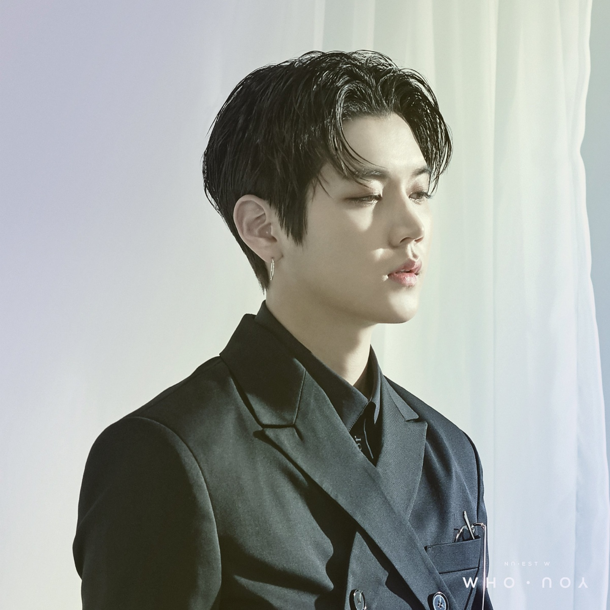

아름다운 이목구비와 중성적인 외모로 전형적인 미소년 컨셉을 이어오고 있다.
장발 컨셉을 자주 선보였는데 그것이 또 기가 막히게 잘 어울려서 연예계 장발미남으로 빠지지 않고 손꼽히는 비주얼의 소유자이다.[12]
데뷔 초부터 꾸준한 금발을 유지 중이나, '잠꼬대' 컴백 전 팬 서비스로 진행된 영화 데이트에서 JR이 의도치 않게 다음 앨범에서 머리 색을 바꾼다는 스포일러를 했다. 미니 앨범 3집 잠꼬대의 국내 활동이 끝난 뒤 갈색머리로 주로 활동하다가 정규 1집 'Re:BIRTH'에서 처음으로 머리를 짧게 잘랐다. 미니앨범 4집 '여왕의 기사'에서는 긴 흑발, 그리고 미니 앨범 5집 '러브페인트'에서 분홍 머리 가발을 소화했다.
뉴이스트에서 가장 많은 비주얼 체인지가 이루어지는 멤버이며, 실제 렌은 뉴이스트에서 비주얼에 가장 많은 관심과 아이디어를 갖고 있는 멤버이다. 직접 샵에 가서 여러 가지 렌즈를 착장해보고 핑크색, 그린라임, 그레이가 잘 어울리면 세 개를 한꺼번에 다 사서 회사 직원들과 하나씩 껴 보며 컨펌을 받는 등 사적으로도 연구를 많이 한다. 컨셉을 소화하기 위해 노력을 아끼지 않는데, 다른 멤버들은 20분이면 끝날 스타일링을 혼자 한 시간씩 받기도 하고 장발 컨셉의 경우 본드를 사용해야 해서 두피가 많이 뜨는 등의 고생을 감수하기도 했다. 데뷔 초부터 굉장히 노력을 많이 했던 부분이고, 이미지 트레이닝을 통해 스스로의 느낌에 취해서 몰입한다고 한다. 데뷔 초부터 이어진 중성적인 컨셉이 세간에 호불호가 상당히 갈린다는 것을 렌 본인도 잘 알고 있는데, '회사에서 다른 남자들이 도전하기 어려운 과제를 주었을 때 고민하다가 해봤더니 자신에게 잘 어울렸다'고 회고하며, 좀 불편하기도 하고 안 좋은 시선들도 있었지만 솔직히 말하면 그런 시선들도 재밌다고 밝혔다. 스스로에 대한 확신이 있으니까 남들이 그렇게 봐도 나는 이렇게 살 거라는 마음이라고 한다. 승부욕과 의욕이 만만하고 적극적인 성격이라 방송에서 갑자기 "집착 연기를 해 달라"거나 "섹시 댄스를 춰 달라"는 등의 부탁을 받아도 "저 할 수 있을 것 같아요." 라고 바로 받아들인다. 프로 정신이 투철하다는 것을 알 수 있는 부분이다.
